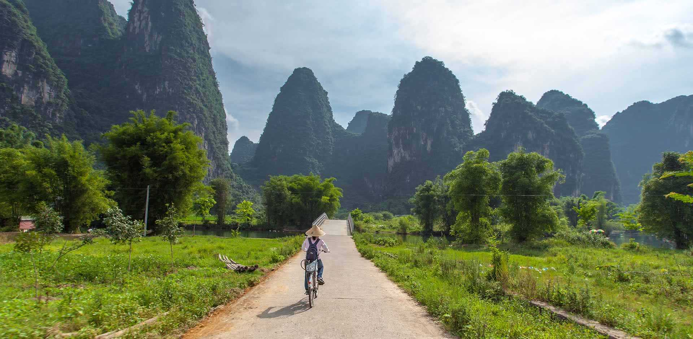

China is a vast and ancient land with a history stretching back more than
5,000 years, home to one of the world’s oldest continuous civilizations.
From the powerful dynasties that built the Great Wall and shaped
philosophy, art, and invention, to the bustling modern cities that now
define its skyline, China is a country where the past and present live
side by side. Ancient temples and imperial palaces stand amid towering
skyscrapers, while peaceful rural landscapes reveal timeless traditions of
farming, tea culture, and craftsmanship. Visitors can wander the historic
streets of Beijing, sail along the Yangtze River, or marvel at the natural
beauty of Guilin and Zhangjiajie. With its rich culture, diverse cuisine,
and breathtaking scenery, China offers a journey through history,
innovation, and extraordinary contrasts. Explore the map below to discover
the main destinations across this remarkable nation.
Best Places to go to
From historic Beijing to modern Shanghai and the scenic beauty of Guilin,
China offers a blend of culture, innovation, and natural wonder unlike
anywhere else.
Beijing
Beijing
China’s historic capital, filled with imperial landmarks like the
Forbidden City and the Great Wall. Ancient traditions meet modern
life in a city that remains the political and cultural heart of
the nation.
Shanghai
Shanghai
A modern metropolis of lights and contrasts, where futuristic
skyscrapers tower over the historic Bund. Shanghai captures
China’s fast-paced innovation and cosmopolitan energy.

Guilin
Guilin
Known for its stunning limestone peaks and winding rivers, Guilin offers some of China’s most beautiful natural scenery and a peaceful glimpse into traditional rural life.
Food & cuisine
Chinese cuisine is one of the most diverse and celebrated in the world, shaped by thousands of years of history and regional traditions. From the bold, spicy dishes of Sichuan to the delicate flavors of Cantonese cooking and the rich noodles of northern China, every region offers something unique. Meals are often shared, bringing people together through a balance of flavor, color, and texture — a true reflection of China’s culture and way of life.